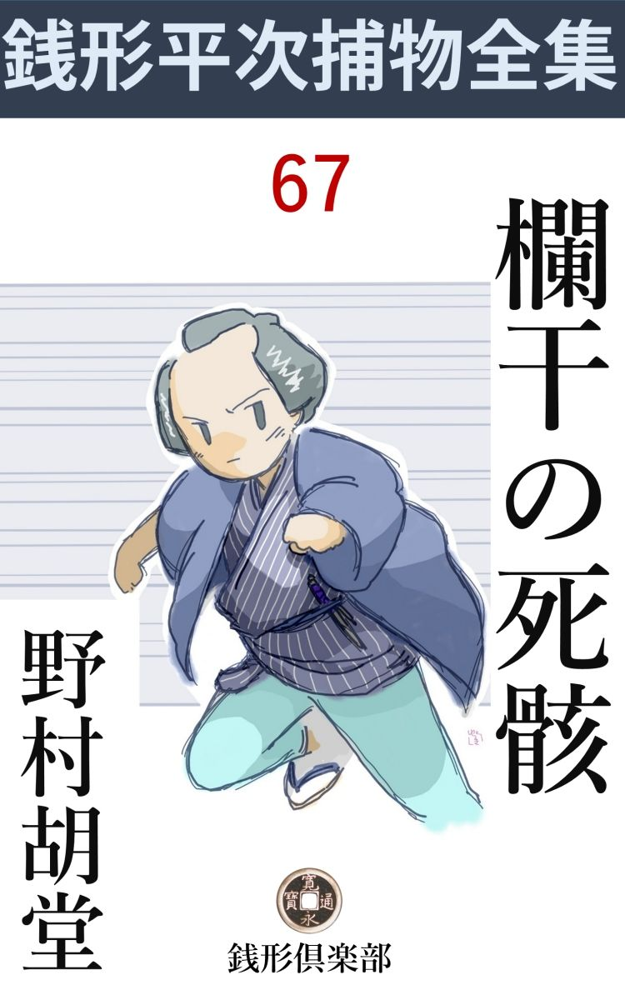
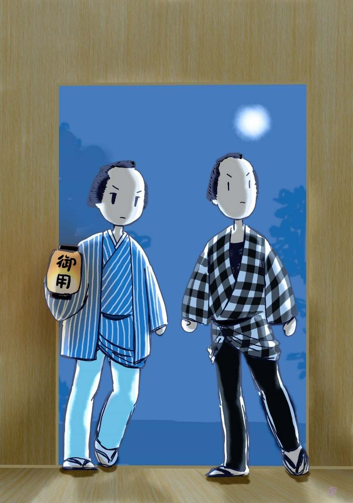

| 欄干の死骸: 銭形平次捕物全集第67話 (銭形倶楽部) | |
| 野村胡堂 | |
| ZENIGATA CLUB (2018) | |

一
「親分、こいつは驚くぜ、------これで驚かなかった日にゃ、親分とは言わせねえ」
息せき切って駆けつけたガラッ八の八五郎、上がり框 に両手を突いて、『物申し上ぐる型』に長 んがい顔を振り仰ぐのでした。お行儀がよくなったせいではなく、息が切れて、しばらくは後が続かなかったせいでしょう。どもりが疳 癪 を起したように、一生懸命閾 を引っ叩 いております。
「何を騒ぐんだ、八」
銭形平次は秋の朝の光を浴びて、せっせと植木の世話をしていたのです。
「あわてちゃいけませんよ、親分」
「あわてているのはお前じゃないか、何をそんなに面喰らっているんだい」
平次は落着き払って如露 を沓脱 の上へ置きました。
平明な朝の光の中に、平次の顔の穏やかさ、夜店物のケチな盆栽ばかり集めて、その規矩準縄 にはまらぬ、勝手な発育を楽しむ平次の心境には、岡っ引らしさなどは微塵もありません。
「両国橋から首を吊ってブラ下った奴があるんだ」
「なるほどそいつは変っているな、------どうせ死ぬのに、場所の選り好みなどは贅沢のようだが、不思議に肥 桶 の中へ首を突っ込んで死ぬ奴はないものだな」
「親分、落着いていちゃいけませんよ」
「あわてていかず、落着いていかず、一体どんな取り留めのない顔をしていりゃ、お前の気に入るんだ」
平次と八五郎は、いつでもこんな調子で重大事件を片附けて行くのでした。
新しい表現に従えば、二人のユーモアの裡に、本当の理解があり、程のよいテンポがあったのです。
「それが女だったら、一体どんな事になるでしょう、親分」
「女が両国橋からブラ下がったのかい」
「こいつは親分だって驚くでしょう、それもザラの雌 じゃねえ------若くて綺麗で、身 扮 がよくて、小股が切れ上がって------」
「待ちなよ、八、まるで、手前の惚気筋の女のようじゃないか」
「冗談でしょう、親分、あんな白粉焼のした、お使姫のようなんじゃねえ。その上胸へ一丁、ギラギラする剣を突き立てられていると聴いたら何んなもので、親分」
「何だと、その女の首ッ縊りの胸に、刀が突っ立っている、と言うのか」
平次の職業意識は目覚めました。
安盆栽なんか一ぺんに忘れてしまって、ガラッ八が突っ立っている入口へ突き進みます。
「親分の前だが、刀じゃねえ、ツルギだ」
「何？」
「片刃で反っくり返ったのは刀で、両刃で真っ直ぐなのはツルギさ。絵に描いた不動様が持ってなさるじゃありませんか、親分」
ガラッ八の大きな鼻が、天井を仰いだまま、思いきりふくらみます。
「何処でそんな事を聴きやがったんだ」
「種を明しゃ橋番所の老爺さ。とにかく、こいつは権 現 様 御入府以来ですよ、親分」
「妙なところへ権現様なんか引合いに出すな、旦那方に叱られるぞ」
「両国まで、チョイと一と走りやっておくんなさい、親分」
ガラッ八がこう言うのも理由 がありました。
東両国は石原の利助の縄張で、今では廃人同様の利助が、娘のお品に助けられながら、僅かに十手捕縄の威光を墜 さずにいるのは、銭形平次の好意で、子分の八五郎を後見に附けて置くからでした。
「手前が埒 をあけなきゃ、お品さんに済むめえ」
「でも、親分、首っ縊 りのブラ下がったのは丁度橋の真ん中ですぜ。東 風 が吹けば死骸の裾が武 蔵 へ入るし、西風が吹けば鬢 のほつれ毛が、下総へなびく」
「馬鹿野郎」
「へッ、へッ、そう来るのを待っていたんで」
ガラッ八が掌 の凹みで、おでこを撫で上げるのも尤もでした。
馬鹿野郎をきっかけに、平次は立ち上がって、帯をキュッと締め直したのです。
「へエ、煙草入------」
「馬鹿だな」
ガラッ八はもう一つ小気味の良いのを喰 いました。
二
東西両国は弥次馬の山、役人が声を嗄 して追い散らしますが、蠅のように集まって来る群衆は、手の付けようもありません。
橋の欄干 から、若くて綺麗な娘が、荒縄でブラ下げられ、胸に両刃のツルギを突っ立てて、怨み多い眼で、大川端の方を眺めていたというのですから、物見高い江戸っ子の神経をピリピリさせたのも無理のないことです。
「退いた退いた、見せ物じゃねえ」
ガラッ八は顎で群衆をかきわけるように、橋番所へ平次を案内しました。
欄干と水肌とのちょうど中頃にブラ下がっていた死体は、若い娘の死 耻 を晒させるでもあるまいという町役人のはからいで、検 屍 前ですが、とにかく取り外して橋番所に運び、諸人の恣 な眼から遠ざけて、八丁堀役人の出役を待ったのです。
「あ、銭形の、丁度宜いところだ」
町役人に案内されて、死骸の前に行った平次、------形ばかりの筵 を取って、
「------」
さすがに息を呑みました。これはまた、あまりにも虐 たらしい姿です。
「親分、こいつを見て驚かなかった日にゃ------」
自分の仕事のように、鼻をうごめかすガラッ八。
「黙っていろ」
平次は片手拝みに、娘の死骸を弔 ってから、職業的な冷静さをとり戻して、その側に片膝をつきました。
品の良い島田、銘仙の単衣をキリリと着て、赤い帯も、心持乱れた裾も、艶めかしさよりは痛々しさが勝って、蒼白く引締った顔には、縊 れた者の醜 い苦惱 の跡などは少しもありません。
それにしても、この非凡の美しさはどうでしょう。﨟 たき眉も、柔かく通った鼻筋も、円い美しい曲線を見せた顎も、死骸という感じを超越して、砕かれた、人形の、砕かれ残った美しさを惜むような、不思議な愛着を覚えさせるのはどうしたことでしょう？ これで唇に生色があって、眼が活々と輝いていたら、場所柄の水茶屋を漁 りつくしても、三人とはならぶ者がない筈です。
娘の胸には、両刃の剣 が刃並を水平に、肋骨の間へグサリと突き立って居りました。
乳の括 れの上、深さにして三寸位、血汐は、胸から帯をひたして、凄惨を極むる姿、御用を勤める者でなければ、長く見ては居られません。
「これほどのきりょう なら、すぐ身許は解るだろうな」
平次は独り言ともなく言いました。
「解りましたよ、親分、弥次馬の半分は見知り人です」
橋番所の老爺です。
「誰だい」
「向柳原の梶 四郎兵衛様の御嬢様で」
「成程、それじゃ」
平次はうなずきました。
中国の大藩の浪人者で相当の貯蓄 を持っているらしく、手習を教えるでもなく、剣術を指南するでもなく、碁と、謡曲 と、学問に凝って、心静かに日を送っている、梶四郎兵衛の娘お勇の美しさは、そんな事には無関心に、平次も日頃よく聴き知っていたのです。
尤も、梶親娘 が向柳原に引っ越して来たのは、ツイこの春で逢う機会がなかったせいもあるでしょう。
早耳のガラッ八さえ、欄干にブラ下がっているうちは見極めが付かず、面喰らって平次のところへ馳け込んだような有様だったのです。
「親御はどうなすった」
と平次。
「知らせてやったが、生憎のお留守だ」
橋番所にいた町役人が口を利きます。
「親一人娘一人の梶さんが、ゆうべ余儀ない用事で、どこかへ出かけるから、娘と二人で留守番をしてくれと、------私が頼まれて参りました」
四十がらみのお神が顔を出しました。
「お前は------」
「梶さんのお隣の荒物屋のお神さんで」
橋番の老爺は紹介してくれます。
「それは何刻 だったえ」
と平次。
「梶さんがお出かけになったのは戌刻 （午後八時）少し過ぎ、お嬢さんがお出かけになったのは、それからまた四半刻（三十分）も後でございました」
「お嬢さんも出かけたのかい」
「へエ------、梶さんがお出かけになって間もなく、変な男が表の戸を叩いて手紙を投り込んで行きました」
「確かに男だね」
「間違いはありません。太い作り声で------、するとお嬢さんがソワソワして居りましたが、急に思い立ってお出かけになりました」
「たった一人で？」
「私もついて行こうと思いましたが、ツイ近所だし、家の方が用心が悪いからと、留守番をしてくれるように------とたって仰しゃるんです」
荒物屋の女房は、少しばかり責任を感じている様子です。
「何処へ行くとも言わなかったのか」
「くり返して訊きましたが、教えてくれません」
「若い娘のことだから、出かける前に念入に化粧するとか着物を換えるとか、大分手間取ったことだろうな」
平次の問は含蓄 の多いものでした。
「いえ、ちょいと帯を直しただけ、何んにもなさいません。平常 から綺麗過ぎるほど綺麗なお嬢さんで、お化粧も極く手軽な方でしたが------」
「お神さんは、その帰りを朝まで待っていたのかい」
「まさかこんな事とは知りません。若くて綺麗な方ですから、いずれいろいろの事がおありだろうと思って、ツイ待つともなく、寝込んでしまいました」
荒物屋の女房の話にも筋は立ちます。それにしても、梶四郎兵衛が宵に出たという用事は何？
娘のお勇をおびき出して、こんな残酷 な目に逢わせた手紙はどんな事を書いてあったでしょう？
袖から帯の間などを一応調べて見ましたが、それらしいものは一つも見当らなかったのです。
三
事件重大と見て、時を移さず八丁堀同心小間木善十郎は、三輪 の万七、お神楽 の清吉以下の御用聞を従えて出役しました。
「これは、小間木様、御苦労に存じます」
「平次か、お前が嗅ぎ付けて来るようじゃ、下手人が挙ったも同様だろう」
小間木善十郎は少しばかりイヤな事を言います。若くて野心的で、ともすれば平次と違った方向へ奔 逸 する善十郎は、決して平次に好感を寄せる相手ではなかったのです。
「飛んでもない。旦那、何んにも見当が付いちゃいません」
平次はつつしみ深く死骸の側をはなれて、先輩の三輪の万七に譲りました。
「成程、これは大したきりょう だ」
万七の冒瀆 的 な眼が、平次がやったよりも念入りに、娘の死体を改めます。
「どうだ、万七、見込みは？」
と小間木善十郎。
「若い女の首へ縄をつけて、両国橋の欄干からブラ下げるのは、よくよく業 を晒さしたい野郎の仕業でしょう。この娘を口説き廻したのを片っ端から挙げさえすれば、わけはありません」
万七はいとも手軽です。
「それにしちゃ、両刃 の剣 は念入りじゃございませんか、旦那」
平次はツイ抗議を申込みたくなりました。三尺もあろうと思う、物凄い両刃の剣は、娘一人を殺す武器にしては大 袈 裟 過ぎます。
「恋の怨となりゃ、両刃の剣だって出刃庖丁だって振り廻すだろうじゃないか」
万七はムッとした様子です。
「私 には解らないことばかりです。何んだって、こんな不自由な刃物を使ったでしょう。剣で刺し殺した上、死骸を橋の欄 干 まで持って来たのはどういうわけか、万一橋番所のお役人にでも見つかったらどうするつもりだったでしょう」
平次は首を捻 りました。
「橋の上へつれて来て首へ縄をつけて欄干からブラ下げたんだろう。生きている人間が渡る分には、昼だって夜中だって橋番所は文句は言わねえ」
三輪の万七は一寸も引かなかったのです。
「首へ縄をつける前に、娘は死んでいたぜ、これは絞め殺された人間の人相じゃない」
平次が指さした娘の蒼白い顔には、不思議と穏やかささえあります。
「橋の上で突くという術 もあるぜ」
「これだけ血が流れたんだから、橋の上で殺せば、どこかに痕 がある筈だ」
平次は橋番役人を顧みました。
「橋の上に血の汚れなどはない。それに東西の両方の袂で、厳重に見張っているから、たとえ夜中でも変死人なんかを橋の上へ持込める筈はない」
橋番役人は頑固らしく頭をふります。橋の上で殺さず、東西両国から死骸を持込まないとしたら、一体どこから娘の死骸が橋の上へ天 降 ったことでしょう。
平次はもういちど娘の死骸を調べました。新しく気の付いたことは、剣の角度が胸と正確に直角なことと、刃が水平にいささかの狂いもなく肋 骨 の間に突っ立っていることなどです。
「あッ」
平次は思わず驚きの声をあげました。手をかけると、剣の柄 が、何の他愛もなく鍔 といっしょに抜け落ちたではありませんか。
「目 釘 がない」
目釘のない刃を、人間の胸へ水平に打ち込めるものでしょうか。
「縄の結び目はどうだ」
小間木善十郎、思いの外細かいところに気が付きます。
「欄干の下のところで切って来ましたが」
橋番所の老爺の差出したものを見ると、綱はほんの六尺ばかり、一方に輪を拵えて娘の首にはめ、一方は欄干に無造作に縛ったもので、ありふれた巌丈一方の麻縄、何の変哲もありません。
「その娘をブラ下げた、欄干のあたりを見せて貰いましょうか」
平次は橋の上へ、弥次馬を掻きわけるように登って行きました。ちょうど中程、ひときわ人間の群 がるあたりが娘の死骸を晒した場所でしょう。橋の上には、橋役人の言った通り、血の痕一つありませんが、欄干は、平次の心なしか、たくましい麻縄で摺れて、少しばかり木目の凹んだところがあるような気がします。
四
「親分、口惜しいね。三輪の万七の鼻を明かせなきゃ溜飲 が下がらねえ」
「つまらねえ事を言うな」
銭形の平次と八五郎は、とにもかくにも引揚げました。小間木善十郎の指図で、大先輩の三輪の万七が、お神楽の清吉以下の子分を動員し、縄張り構わずの大活動を開始したところに、白い眼を見せ付けられながら、愚図愚図しては居られなかったのです。
「町内の若い者を一人残らず当っても構わねえから、あの娘に気のあったのや、嫁に欲しいと言い出したのを一人残らず調べ上げてくれ」
「親分は------」
「あの剣の出た場所を捜 して来る」
平次は何より剣を気にしている様子でした。
「娘は男におびき出されたんじゃありませんか、親父が留守になったんで、逢引にはこの上もない時で------」
「三輪の兄哥もそんな事を考えているようだが、それだけは間違いだよ。若い娘が夜中に外へ出たからって、逢引とは限らねえ」
「まさか金の工面でもないでしょう」
「つまらねえ事を言うな、------若い娘が逢引に出かけるのに化粧も直さず、身 扮 も換えずに行く筈はねえ」
「成程ね」
「思い当るだろう、八」
「へッ」
「化け損ねたお使姫のようなのは毎々見て居るだろう」
そんな冗談を言いながら、二人は昌平橋で別れました。
平次の頭は、剣のことで一パイでした。三尺に余る両刃 の剣というと、社 の奉納額か、祭礼の山 車 の外にはありそうもありません。
念のため、剣の奉納額のある社を、片っ端から歩きましたがどこのも無事で、------よしんば額から取外したところで、赤 錆 に錆びて物の役に立ちそうもありません。
「あれだ」
フト思い出したのは、ちかごろ向柳原に出来た流行 神 でした。優曇 法 印 というのが人寄せに建てた一宇 の堂で本尊は閻 魔 とも鍾馗 とも付かぬ大変な代物、------神 仏 混 淆 時代で、そんなチャチな流行神は、江戸中に幾つあったか知れないのです。
平次は飛んで行きました。その拝殿の横手には、真新しい剣が二た口 、どこの御信心連か知りませんが、ツイ二た月ばかり前に奉納して、善男善女の胆を冷やさしていた事に気が付いたのです。
堂に着いて見ると、中は一面の護摩 の煙、本尊の前に堂守の優曇法印は、揉みに揉んで祈って居る最中でした。
一歩踏み込むと、三間四面の堂の中は、蔽 うところなく平次の眼にさらされます。
「あッ」
驚いたことに、堂の入口敷居から土間にかけて、一面の血潮ではありませんか。
「法印、これは何うした」
平次の声は思わず峻烈になりました。
「あ、銭形の親分、ちょうど宜いところだ、------仏罰の恐ろしさ、これを見て下さい」
優曇法印は立ち上がって、護摩壇の前を指します。
「------」
平次はもう驚きの声も出ませんでした。そこには荒筵 の上に仰向になって、碧 血 に染んだ男の死骸が横たわっているのです。よくよく見ると、相好は変って居ますが、まぎれもない浪人梶四郎兵衛、娘のお勇と同じように、胸に両刃 の剣を突っ立てられて、怨多い洞 ろな眼に、格 天井 の下手な丸龍の絵を睨んで居るではありませんか。
「梶四郎兵衛は、私の宗旨を嘲 り笑った許し難い法敵じゃ。こうなるのも、仏罰で致し方もない。お解りか、平次どの」
優曇法印はそう信じ切っているのでしょう。狂信者らしい眼を光らして、ニタリニタリと得意らしく笑うのです。
平次がこの馬鹿馬鹿しい仏罰の夢物語を、どんなに骨を折って打ち壊したことでしょう。宥 めたり、すかしたり、脅かしたり、半刻あまりの努力で、ようやく法印から聴き出したのは、
------今朝戸を開けると、梶四郎兵衛が両刃の剣に胸を縫われて死んで居た------とたったこれだけのことです。
さっそく町役人に人を走らせ、両国から小間木善十郎を迎えましたが、梶四郎兵衛は娘と同じ死にようをして居るという『事実』以外には、何にも解りません。
五
「親分、すっかり解ったよ」
ガラッ八の八五郎は、その日の夕方、平次の家へ飛込んで来ました。
「洗い上げても、娘のかかり合いじゃ、大した役には立たないかも知れないよ」
平次はなんとなく浮かぬ顔色です。
「そう言えば、親父の梶四郎兵衛も殺されたんだそうですね」
「それで腐っているんだよ、------これは思いの外底の深い事かも知れない」
「あの梶四郎兵衛という浪人者は、------敵持だと言うことですよ」
「何だと、八」
「女敵討 だね。あの娘の母親が美しい女で、梶四郎兵衛が若い時、同藩中の朋輩の許嫁 だったのを横奪りし、一緒になって十七八年逃げ廻り、あの娘まで生ませたが、五年前肝心の恋女房に死別れてしまったそうで------」
「待ってくれ、------どこでそんな事を聴いて来たんだ」
平次はすっかり緊張してしまいました。早耳では江戸一番と言われたガラッ八が、持前の天才を発揮して、飛んだ良いネタを拾って来てくれたのです。
「当の梶四郎兵衛を敵と狙っている、小峰助右衛門という浪人から聴いたんで、こいつは嘘じゃありません」
「本当か、八」
「本当にも本当でないにも、この耳で本人から聴いたんだから、これほど確かなことはありゃしません------尤も小峰助右衛門は大酒呑みの、半 瘋 狂 で、今じゃ女敵討を、一杯の冷酒で帳消しにし兼ねない人間ですよ」
「でも、二本差に変りはあるめえ。そこへ案内してくれ、逢って訊きたいことがある」
平次はもう、飛出す支度をして居りました。
「でも親分、------小峰助右衛門は逃げも隠れもしませんよ。ツイ先刻まで、柳原のかん酒屋で、底の抜けるほど呑んで居ましたよ。------それより、半日がかりで訊き込んで来た梶四郎兵衛の娘、お勇にチョッカイを出した男の名前だけでも聞いて下さい」
ガラッ八は少し泣き出しそうです。得意の順風耳、千里眼を働かせて、半日で他の人の十日分ほど聴き込んだ材 料 を、平次の気紛れで、闇から闇へ葬 られそうでならなかったのです。
「よし、それじゃ覚悟を決めて聴こう。話してくれ、八」
「そう覚悟を決められちゃ、気の毒で口が切れねえ」
「贅沢を言うな」
「実は、親分」
八五郎の話は念入りに詳しいものでしたが、簡単に言うと、お勇は珍らしい美人で、向柳原中の男の切れっ端が、一人として思いをかけないものはあるまいと言われましたが、中でも執 拗 に付き纏ったのは、同じ町内の糊売婆アの二階を借りて住む御家人くずれの遠藤左馬太、紙問屋で神田で指折の物持佐原屋の伜茂吉、もう一人は、向柳原切ってのノラクラ者、博奕 も、喧嘩も、火事場の働きも、釣も、網も、将棋 も、凡そ飯の足しにならない事なら、なんでも百人並に優れた才能と腕を持って居ようと言う、お先棒の三次でした。
その中でも一番深刻に附き纏ったのは、御家人くずれの遠藤左馬太で、これは男もよし、腕も弁舌も達者でしたが、人柄が悪いので、お勇自身がひどく嫌って居りました。
佐原屋の茂吉は、金に糸目をつけない代り、青瓢箪 が化けて出たような男で、これもあまり問題にならず、------尤も本人は佐原屋の身上をお中元に持って行ってしまいそうな意気込でしたが、見識の高いお勇は、白い歯も見せたことはなかったでしょう。
お先棒の三次に至っては、まるで虫ケラのように扱われました。たった一度、金釘流 で六尺あまりの附文を書いたのをお勇が親の四郎兵衛に見せると、四郎兵衛はカンカンに怒って、家主に披露し、家主のところに集まった町内の若い者が、面白半分にそれを、昌平橋の袂へ高札のように貼って押し立てて、聖堂に通う学者の玉子に読ませて、江戸一円の笑い草にしたことさえありました。
遠藤左馬太はお勇の冷たい態度にも懲 りず、二三日前思い切って仲 人 を立てましたが、これは剣もほろろの挨拶で追い返され、『腹を切りかけたそうだ』という噂まで立ったほどです。
茂吉は唯もう身を焦 すだけ。
「親分、臭いのはこの三人ですよ。昨夜一と晩の動きを探 って来ましょうか」
ガラッ八は兎にもかくにも報告を了 ります。
「そうしてくれ、俺はその女敵討の浪人の方を少し当って見る」
平次とガラッ八は、もう一度手分けをしました。
六
平次は、ガラッ八に教わった筋を辿 って、居酒屋から居酒屋へと歩くうち、浜町のとある飲屋で、とうとう小峰助右衛門の消息を掴みました。
「その方ならツイ今しがた、三輪の万七親分に縛られて行きましたよ」
「えッ、縛られて？」
平次は鳶 に油揚をさらわれたような心持です。が、縛って行ったというのは、相手が二本差だけに穏かでありません。
「尤も泥のように酔って居ましたから、子供にだって縛られますよ。朝から晩まで飲み歩いているんですもの------」
飲屋の亭主は、銭形平次の失望の原因も知っているのでした。
「そんなに飲み歩いて、小峰という浪人者の勘定ぶりはどうだ」
「不思議にお金を持っている様子ですよ」
「十七八年も浪人をしていると言うが------」
「俺は金の実 る木があるんだ、当分飲み代 には困らない、と威張っていましたよ」
「はて？」
平次の胸の中には、一道の光明が閃 めきましたが、素知らぬ顔で訊き進みました。
「その金の実る木と言うのは何だろう？」
「よくは判りませんが------何でも女敵討なんだそうで」
「フーム」
「敵を見付けたが、討っちゃ元も子もなくなるから、気永に飲み代をせびることにきめた。五年越しいたぶっているが、不思議に水の手の切れないところを見ると、余っ程持っているに違いない。敵には金のあるものを持つに限る------などと太平楽を言っておいででした」
「フーム」
平次は唸りました。これはすっかり当てが外れた様子です。もういちど突っ込んで、
「今日はどんな機嫌だった？」
「何時もの上機嫌で、明日は十五日だから、また敵討に行く------と冗談見たいに仰しゃってましたよ」
「明日と言ったね」
「間違いは御座いません。------明日は十五日だから------と」
「有難う。それで大方判った」
平次はそのまま踵 を返して、優 曇 法印の堂に向いました。
女敵討を言い立てて、かりそめにも敵から飲代を強請 るような男が、大事の金主を殺す筈はないと思ったのでしょう。
優曇法印の堂へと一丁場------というところまで行くと、向うから多勢の者が、縄付を追っ立て、ドカドカと近づいて来ました。
「お、銭形の兄哥 」
意地の悪そうな声は、言う迄もなく三輪の万七です。その前に腰縄を打って追っ立てられるのは当の優曇法印、昂然として、少しもめげぬ姿で、口の中では、何やらモガモガと引っ切りなしに呪 文 のようなものを称えて居ります。
「銭形の親分、------下手人は挙ったぜ」
縄尻を取った、お神楽の清吉です。
女敵討と触れて歩いた小峰助右衛門と、堂の中に屍体をおいて、祈りつづけていた法印は、なるほど、下手人でなければなりません。それを下手人であると思うのは、小峰助右衛門の場合では平次の理性が許さず、後の優曇法印の場合では、平次の微妙な直感が許さなかったのでした。
家へ帰ったのはもう暗くなってから。
ガラッ八は、少し萎 れ気味で平次の帰りを待っておりました。
「どうだ、八」
「今度は滅茶滅茶の縮 尻 ですよ」
「そうか」
平次は自分の縮尻の肩が、いくらか緩やかになったような心持です。
「意地の悪いことに、三人とも昨夜は家に居ましたよ」
「はてな？」
「御家人崩れの遠藤左馬太は、糊売婆アの家の二階にゴロゴロしていますが、一文なしで寄 席 へも行けなかったそうで」
「誰から聴いた」
「糊売婆アは、轡 虫 みたいにお饒舌 ですよ」
「それから」
「佐原屋の息子の茂吉は、宵のうちは帳場に居て、亥刻 （十時）頃から奥の部屋へ引取ったと言うことで------これは番頭も小僧も牡丹餅ほどの判を捺すそうで------」
「三次は？」
「これは一番確かで------、宵から佐原屋へ遊びに行って、息子の茂吉と夜中まで将棋を差していたそうですよ」
「それから------」
「佐原屋へ泊って今朝帰ったそうで、一方は堅気の町人の息子、一方はやくざ者ですが、餓 鬼 のうちからの友達で、妙に馬が合う様子です」
「困ったな、八」
「------」
これでは、三輪の万七の見込の方が正しいのかもわかりません。
七
「八、ちょいと来てくれ」
「何処へ行くんで？」
平次は遅くなるのも関 わず、ガラッ八といっしょに優曇法印の堂に向いました。
「ここをもう一度見ておきたいが、------夜は誰も居ないんだね」
向柳原の河岸っぷち、千坪ばかりの空地の中に建った法印堂は、堂守を縛られて、闇の中に不気味な口を開けております。
「あの法印は二三丁先の自分の家へ帰って泊りますよ」
「夜は誰も居ないのか」
「こんな気味の悪いところに誰が居るものですか」
「それで解って来た。近所で提灯 を借りて来てくれ、------番所へ行ってわけを話したら貸してくれるだろう」
平次に指図されるまでもなく、ガラッ八は至極そんな事を心得て居りました。
が、ガラッ八が提灯を借りて来るまで、平次も遊んでいたわけでは居りません。曇っては居りますが、ちょうど満月で、窓の戸さえ明けてしまえば、堂の中は薄々見えないことはありません。
「親分」
帰って来た八は御用の提灯をさげて居ります。
「八、ちょうど宜い。お前この扉を開けて中へ入って見てくれ」
平次は堂の正面の閉 した扉を指さします。
「こうですか、親分」
ガラッ八は提灯を平次に預けて、何の気もなく、扉をサッと押したのです。

ちょうど八五郎の全身が敷居をまたいだ時、
「あッ」
堂の中から射出された一本の征矢 、サッとガラッ八の左の胸へ------。
いや、本当の矢ならそれは間違いもなく、ガラッ八の心臓を射貫いたでしょうが、飛んで来たのは、白くて太いが、実は三尺ばかりの苧 殻 、ガラッ八をうんと脅 かして、敷居の上へ、ポトリと落ちたのです。
「それが両刃 の剣だったら、どうなると思う、八」
「親分、判った」
ガラッ八の顔にも生気が蘇 えります。
「仕掛は馬鹿のようなものだ、見てくれ」
平次の掲げた提灯の明りに透して見ると、怪奇な本尊の前一間ばかり距てて立った左右の柱の間へ、青竹を横に張って弓の代りにし、一杯に引絞ったところを、本尊の後ろの柱の環 に、弓の弦を糸で引き、それを入口の扉に連結して、扉を外から開けば、本尊の前の弓が、自然に切って離され、それにつがえた苧 殻 でも、両刃の剣でも、間違いもなく正面の扉を開けた人間の左の胸へ、恐ろしい勢で飛んで来るように仕掛けてあったのです。
「どうして、こんな事が判ったんです。親分」
とガラッ八。
「堂の正面に納めた額の剣がなくなって居るのを見た時、------どうかしたらこの術 ではあるまいかと思ったが、弓がなかったので、うっかり見 遁 して居たよ、------青竹だって、結構弓の代りになるとは気が付かなかった」
「糸は？」
「本尊の台座の下に隠してあったよ。青竹は外の矢来から引っこ抜けば宜い」
明察、平次の眼に曇りはありません。
「誰がそれをやったんでしょう。親分」
「判らぬ」
平次は唇を噛みました。下手人が判らなければ、殺しの手段 が判っても何にもなりません。
「優曇法印でしょうか」
とガラッ八。
「仏敵退治位はやり兼ねない男だが、何うも違っているようだ。あの法印では、こんな手の混んだ細工は出来そうもない」
「------」
「それに法印の仕業なら、娘の死骸を両国橋まで持って行く筈もない」
「すると？」
「遠藤左馬太か、佐原屋の茂吉か、お先棒の三次か？」
平次にも、これから先は判りません。三人が三人とも、結構過ぎるほどの現場不在証明 を持っているのです。
八
二日三日と、無駄な日は過ぎました。その間に平次は、遠藤左馬太と、茂吉と三次の現場不在証明を打ち壊し得る、いろいろの場合を調べ上げました。
遠藤左馬太の泊っている糊屋の婆アは、五十がらみの恐ろしい金 棒 曳 、その上癇性 で目敏いのを自慢にして居る女ですから、この女主人に知れないように、二階から脱け出すことは、猫のような身軽さで、物干から飛降りない限りは、まず絶対に不可能です。
三次が佐原屋へ泊るのは、これもありがち のことで、決して珍しいことではなく、二人の寝んだのは、蔵座敷の離屋二た間ですから、一方が外へ出れば隣の部屋に居る一方がかならず気が付く筈であり、且つ、番頭たちの寝ている前を通って、締りの厳重な外へ出ることは、二人が相談ずくで運んでも、絶対に駄目らしく見えます。
また二三日過ぎました。優曇法印は許されましたが、女敵討の小峰助右衛門は、自分から、梶四郎兵衛殺しを白状したそうで、三輪の万七の喜びは有頂天ですが、吟味与力笹野新三郎の首を捻 らせたのは、小峰助右衛門は、憎い女敵を、唯一刀の下に討った------というだけで、剣のことも、両国橋のことも一向知らないふうでした。
「こいつは臭い。梶四郎兵衛が殺されたと聴いて、捨鉢な心持が言わせる拵え事だろう。気の毒だが平次、本当の下手人を捜して来てくれ」
笹野新三郎はこう言うのです。
その翌る日。
「親分、良い知恵があります」
ガラッ八はニヤリニヤリとして居ります。
「どんな知恵だ」
「待っておくんなさい」
八五郎は即刻飛出すと、糊売り婆アの店へ駆け付けました。
十手と捕縄と、啖呵 と、長んがい顔と、あらゆる攻道具を試みましたが、婆アは、遠藤左馬太に買収されたとは言ってくれません。
さすがのガラッ八も、責め草臥 れて、すごすごと帰った晩、また一つ大変なことが起ったのでした。
事件がクライマックスまで盛上ったのは、その翌る日の朝。
「大変ッ、親分」
朝の陽と一緒に飛込んで来たのは早耳のガラッ八です。
「また大変か。何があったんだ」
平次はまだ顔を洗ったばかり、朝の煙草と、駄盆栽を楽 んでいる最中です。
「また両国橋へ死骸がブラ下りましたよ」
「なんだと、八」
平次の意気込みは猛烈でした。
「今度は無 傷 だが、締め殺された男ですぜ」
「誰だ、それは」
「佐原屋の茂吉ですよ」
「それで下手人が判った。来い、八、逃げられちゃ大変だッ」
平次は何も彼も投り出して、疾風の如く飛びました。つづくガラッ八、これは何が何やら少しも解りません。
向柳原へ入ると、平次の足は一文字にお先棒の三次の宿へ------。
が、危機一髪というところでした。三次はもう叔母の家を飛出して、何処ともなく行ってしまったのです。叔母に訊くと、三次が旅装束 をして、出かけたのは半刻前、まだ芝へも行き着くまいと言うのでした。
「それッ」
飛出す八五郎。
「待て待て、旅に出た後に、あの真新しい草鞋 があるのはどうしたわけだ」
平次は上框 の下を指さします。
「あッ」
蒼くなった叔母。
「八、裏口へ廻れッ。構わないから踏込んで家捜しだ」
平次の叱咤に誘われるように、二階から屋根伝いに表へ飛降りた三次、三足とも飛ばない中に、
「御用ッ」
平次の手に後ろ髪を掴まれてしまったのです。
瞬時、恐ろしい格闘が展開しました。お先棒の三次の身体の利きようは、全く非凡なものでしたが、ガラッ八と平次と力を協 せて、大汗の後ようやく取って押えました。
「悪い野郎だ、神妙にせい」
「------」
三次は一番獰猛 な野獣のような歯を剥くのでした。
九
「親分、どうして茂吉が殺されると、三次に見当を付けなすったので------」
暴れ狂う三次を番屋へ送った帰りガラッ八は、親分の平次にこの捕物の絵解をせがみました。
「二人で相談をして、あの晩梶 親娘 を殺したのさ、------誘い出したのは多分三次だろう」
「蔵座敷で将棋を指していた二人じゃありませんか」
「それが手だ。二人の口が揃えば、まず大概の疑いは晴れる。その上あの蔵座敷には、番頭たちに知らさずに外へ出る道がない------と思われて居たが、倉の二階の窓へ、裏から梯子 を掛けておけば、二人はいつでも自由に出られた筈だ。二人揃って裏二階の窓から梯子で脱出すとは、ちょっと気が付かなかっただけの話さ。あの晩は雨も降らないし、下がよく乾いていたから、梯子の跡も残らなかったろう。------いや、残ったところで、誰も気のつかない日が四五日つづいたんだから、どんな細工でも出来る」
「へエ------」
「堂守の留守を狙って、多分小峰助右衛門の名を騙 り、梶四郎兵衛を呼出したろう。梶四郎兵衛ほどの人間も、闇から射出された剣を防ぎようがなかった------あの剣の刃が縦でなく横に入って居るのと、あんまり真っ直ぐに突っ立って居るのと、もう一つ鍔 と柄 を後からはめて、目釘を忘れたのが不思議だと思ったよ------鍔や柄があっては、剣を弓で射出すわけにはいかない------鍔や柄は後ではめ込んだのさ」
「成程ね」
「三次は恐ろしい人間だが、附け文を晒 し物にされて、死ぬほど口惜しかったに相違ない。梶四郎兵衛を殺そうとして折を狙い、同じ怨を抱いている茂吉を誘った」
「------」
「茂吉は気の弱い男だが、物持の一人子らしい我儘者で、ツイ三次に乗せられて、大それた事をたくらみ、親娘二人を殺したが、あとで、居ても立ってもいられないほど後悔したに違いない」
平次の推 理 は、一つのストーリーを、手際よく組立てて行きます。
「------」
八五郎は口を開いて、時々は歩くのを忘れてそれを聴いて居ります。
「茂吉の様子はだんだん変になる。あんなに気が弱くちゃ、いつ自首して出るかも判らないので、三次は大金を強請 奪 った上、その口を封 ぐ気になったのだろう------」
「------」
「茂吉が殺されたと聴いて、俺には何も彼も判った」
二人の現場不在証明は関連したもので、一方が死ねば、そのアリバイは成立しなくなることまで三次も気が付かなかったのでしょう。
「橋から死骸をブラ下げたのは、親分」
「あの手品は一番判らなかった。橋の上には血の痕も無いし、橋番所では死骸を通した覚えはないと言う------」
「------」
「だんだん考えて見ると、お先棒の三次は、身軽で有名な男だ。火事場の働きが目覚ましいと、お前が言ったろう」
「へエ------」
八五郎、とうの昔にそんな事を忘れて居たのです。
「船に死骸をのせて漕ぎ出し、死体の首に結んだ綱の先を、竿 で欄干を潜 らせ、下から綱を引っ張って、死骸を欄干の下まで引上げたのさ」
「欄干へ結んだのは」
「それからが、三次の身上 だ。死骸を吊った綱を船に縛り付け、橋 桁 を伝わって欄干まで登って、そこで念入りに縛り付けて、綱の端を切り落したのち、死骸の首へ巻き付けた。綱の端をよく見て来るが宜い」
平次の絵解には寸毫 の疑問もありません。
「何んだって、娘の死骸を両国橋へなんか晒したんでしょう」
「悪人の心持は、お前には解らないよ、------八は善人だ」
「からかっちゃいけません」
「若い娘に業 を晒さして、死骸にあんな耻を掻かせるというのは、人間らしい心持のない奴だ」
「茂吉を晒したのは」
「あの悪戯 が面白くなったのさ。------が、そんな増長した事をするから、悪人が縛られるんだね。悪人が増長しなきゃ、俺たちの手に負えないかも知れない」
岡っ引きらしくない平次は、こんな事を考えて居たのです。
お先棒の三次は、観念して何も彼も白状してしまいました。その筋道は、平次が組み立てたストーリーと、少しの違いもなかったことは言う迄もありません。
（編注）
作品中には、身体の障害や人権にかかわる、差別的な語句や表現が見られますが、本書が成立した当時の時代背景等が現代とは異なる古典的な文学作品でもあり、著者が故人でもありますので、底本のままとしました。ご理解、ご諒承のほどをお願い申し上げます。
著者---野村胡堂
挿絵---萩 柚月 © 2017
初出---「オール讀物」昭和十二年九月号 文藝春秋社
底本---「錢形平次捕物全集」第四巻 河出書房 昭和三十一年六月三十日初版
編集・発行 銭形倶楽部